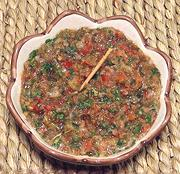

|
Sofrito - SimplePuerto Rico / California - Sofrito | ||||
| Makes: Effort: Sched: DoAhead: |
3-1/2 cups ** 45 min Yes |
Sofrito, an indispensable flavor base for Puerto Rican cuisine, is made in batches as a kitchen staple. This recipe is adapted for North American kitchens (adaptions are noted). See also Comments. | |||
|
|
12 10 12 6 4 1/2 1 1/2 |
oz oz cl oz oz c t t |
Tomato Onion Garlic Bell Pepper, red Sweet Pepper (2) Cilantro (3) Oregano, dried Salt |
Make as much as you think you will need in a reasonable time, and freeze what you won't use in a few days. Make - (45 min)
|